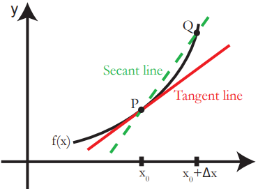
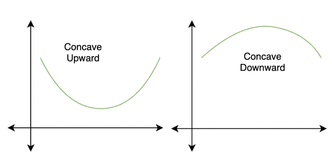
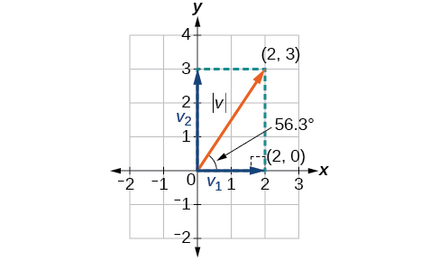
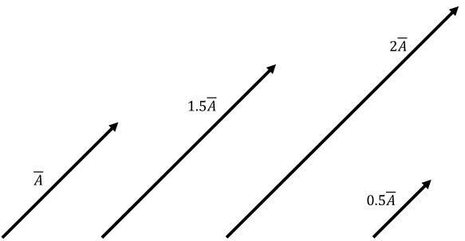
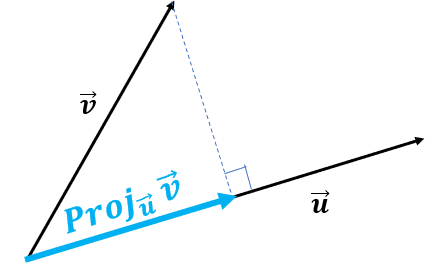

Essential Calculus and Linear Algebra
Module 2, (Section 0: Essentials)
This module will discuss key topics in Calculus and Linear Algebra, which many methods, including statistics and game theory, build on. The focus is on understanding the ideas behind the concept, not necessarily being able to compute all problems. We start off derivatives and their applications. Then we discuss integration. Finally, we introduce vectors and matrices.
Prerequisites: Module 1 (or High School Pre-calculus)
Chapter 1: Derivatives
1.1: Definition of Derivatives
A derivative function \(f'(x)\), has the value at \(x\), which is equal to the rate of change of \(f(x)\) at \(x\)
Basically, derivatives measure the “slope” of any point of \(x\) on \(f(x)\)
For linear functions, \(f'(x)\) is a constant value - since linear functions have a constant slope
For curved functions, \(f'(x)\) is not constant - since the slope is not constant. \(f'(x)\) is thus equal to the slope of the line tangent to the curve at point \(x\)
For example, the red tangent line shows the slope of \(f(x)\) at point \(P\). A derivative function would tell us the slope for every point on the curve \(f(x)\), not just one point \(P\).

How do we normally measure slope?
Well, we do change in \(y\) over change in \(x\), which more mathematically, is \((y_1 - y) / (x_1 - x)\)
We can rewrite this in function form by replacing \(y\) with \(f(x)\) as follows: \([f(x_1) - f(x)] / [x_1 - x]\)
We can further rewrite \(x_1\): what is \(x_1\) conceptually? It is a point that is some distance from \(x\).
We can represent that distance between \(x_1\) and \(x\) as \(h\)
Thus, \(x_1 = x + h\)
Thus, finally rewriting, we get the slope is \([f(x+h)-f(x)] / [(x+h) - x ]\)
We can simplify the denominator so we get: \([f(x+h)-f(x)] / [h ]\)
However, the normal way of finding slope involves finding two different points, and the slope between them
- However, a derivative is the slope at one specific point, not between 2
So how do we do this?
To find the slope at one specific point, we can slowly reduce the size of \(h\) (the \(x\) distance between the two points), until it reaches \(0\)
Remember limits from Module 1: Topics in Algebra?
Thus, we can make \(h\) approach \(0\) by doing the following limit: \(\lim\limits_{h \rightarrow 0}\).
This will tell us the value of the slope between two points, where the distance between two points gets increasingly small, all the way until the two points merge into one, which is the derivative!
For example, we normally calculate slope on an interval between point \(P\) and \(Q\). But, we will slowly reduce the \(x\) distance between \(P\) and \(Q\), which changes our slope secant line, into the tangent line, which gives us the slope at one point \(P\).
So, let us apply this limit of \(h\) as it approaches \(0\) to our slope formula we found above:
\[ f'(x) = \lim\limits_{h \rightarrow 0 } \frac{f(x+h)-f(x)}{h} \]
That is the formal definition of a derivative
- If we want to find any possible derivative, we can use that function (although, sometimes, it will be very difficult algebraically)
So far, I have used apostrophes (ex. \(f'(x)\) ) to represent derivatives of functions.
We can also use the form \(\frac{dy}{dx}\) to express derivatives
- This literally means - the change in \(y\) over the change in \(x\) - we can substitute \(y\) and \(x\) if we are using different variables
Sometimes, we want to take the derivative of a derivative (this will become clear later)
- We can notate this with an additional apostrophe: \(f''(x)\)
1.2: Calculating Derivatives
Like I said above, you can calculate the derivative of any function by plugging it in to the definition of a derivative
- However, this can be very difficult algebraically due to the complexity of some functions
Luckily for us, there are a few generalised forms of functions, whose derivatives are consistent when applied to the definition of a derivative.
These rules allow us to quickly calculate derivatives. The most important are underlined:
Power Rule: \([x^k]' = kx^{k-1}\)
Sum Rule: \([f(x) ± g(x)]' = f'(x) ± g'(x)\)
Constant Rule: \([\alpha f(x)]' = \alpha f'(x)\)
Product Rule: \([f(x)g(x)]' = f'(x)g(x) + f(x)g'(x)\)
Quotient rule: \([f(x)/g(x)] = [f'(x)g(x) + f(x)g'(x)]/[g(x)]^2\)
Linear Rule: \([mx]' = m\), where \(m\) is a constant
Derivative of a constant: \([c]' = 0\), where \(c\) is a constant
Chain Rule: \([f(g(x))]' = f'[g(x)] \times g'(x)\)
Exponential rule: \([e^x]' = e^x\)
Exponential Nested Rule: \([e^{u(x)}]' = e^{u(x)} \times u'(x)\)
Non-base \(e\) Exponential: \([b^x]' = \ln (b) \times b^x\)
Natural Log Derivative: \([ \ln (x)]' = 1/x\)
Log power derivative: \([ \ln(x^k)]' = k/x\)
Nested Log Derivative: \([ \ln (u(x)) ]' = u'(x) / u(x)\)
1.3: Examples of Derivatives
Example 1 (Sum, Product, Constant Rules):
Find \(f'(x)\) if \(f(x) = 5x^4 - 6x^3 + x^2 - 5x + 6\)
1st, split up the function using sum rule: \(f'(x) = [5x^4]' - [6x^3]' + [x^2]' - [5x]' + [6]'\)
2nd, use linear rule and derivative of a constant on the final 2 sections: \([5x]' = 5, [6]' = 0\)
After that, we have: \(f'(x) = [5x^4]' - [6x^3]' + [x^2]' - 5 + 0\)
3rd, use constant rule to simplify: \(f'(x) = 5[x^4]' - 6[x^3]' + [x^2]' - 5\)
4th, use chain rule: \(f'(x) = 5(4x^3) - 6(3x^2) + (2x) - 5\)
5th, multiply out: \(f'(x) = 20x^3 - 18x^2 + 2x - 5\)
Example 2 (Product Rule):
Find \(f'(x)\) if \(f(x) = (x^3)(2x^4)\)
We know the product rule says: \([f(x)g(x)]' = f'(x)g(x) + f(x)g'(x)\)$
- Thus, in our equation, \(f(x) = x^3, g(x) = 2x^4\)
Then, find the derivative of both parts
\(f'(x) = 3x^2\) (Power rule)
\(g'(x) = 2[x^4]' = 2(4x^3) = 8x^3\) (constant rule, power rule)
Now, put it into the product rule: \(f'(x) = (3x^2)(2x^4)+(x^3)(8x^3)\)
Simplify by multiplying and exponent rules: \(f'(x) = 6x^6 + 8x^6 = 14x^6\)
Example 3 (Chain Rule, Power Rule, Sum Rule):
Find \(f'(x)\) if \(f(x) = (3x^2 + 5x - 7)^6\)
This is a nested composite function, so we use chain rule: \([f(g(x))]' = f'[g(x)] \times g'(x)\)
Identify the parts that of our initial function that fit the chain rule parts:
- So in the chain rule format, \(f(x) = x^6, g(x) = 3x^2 + 5x - 7\)
Now, find the derivatives of both parts:
\(f'(x) = 6x^5\) (power rule)
\(g'(x) = 3[x^2]' + [5x]' - [7]' = 6x+5\)
Now, let us fit it into the chain rule format: \(f'(x) = 6(3x^2 + 5x - 7)^5 \times (6x+5)\)
Distribute out \(6x+5\): \(f'(x) = 36x(3x^2+5x-7)^5+30(3x^2+5x-7)^4\)
Chapter 2: Partial Derivatives
2.1: Partial Derivatives
Suppose that we have a function \(f\), with 2 or more input variables
- However, we are only interested in the rate of change, relative to one of the variables
We can do this through a partial derivative. A partial derivative is formally defined as:
\[ \frac{\partial}{\partial x_i} f(x_1,...,x_i,...,x_n) \]
\[ = \lim\limits_{h \rightarrow 0} \frac{ f(x_1, ..., x_i + h, ..., x_n) - f(x_1, ... , x_i, ..., x_n )}{h} \]
Where \(x_1, ..., x_i, ..., x_n\) are all different input variables of \(f\)
Where we are only interested in the rate of change in respect to \(x_i\)
- Hence why only \(x_i\) has a \(+h\) in the denominator
As a result, we treat \(x_1,... x_n\) that are not \(x_i\), we treat them simply as a constant (like how you would treat the number \(5\))
Note: we use the partial sign \(\partial\) instead of \(d\) in the derivative notation to indicate a partial derivative.
To solve a partial derivative:
Treat all other variables other than the one we are interested in, simply as constants (exactly how you would treat the number \(5\) in their position)
Treat the variable you are interested in with the same derivative rules previously discussed
Example:
Given the function \(f(x,z) = 5x^2z^3 + 2x + 3z + 5\), find the partial derivative in respect to only \(x\)
1st, let us do the sum rule: \(\frac{\partial}{\partial x}[f(x,z)] = \frac{\partial}{\partial x} [5x^2z^3] + \frac{\partial}{\partial x}[2x] + \frac{\partial}{\partial x}[3z] + \frac{\partial}{\partial x}[5]\)
Now, let us look at each part:
\(\frac{\partial}{\partial x}[5x^3z^3] = 5z^3 \times \frac{\partial}{\partial x}[x^2] = 5x^3(2x) = 10z^3x\) (Remember, treat \(z^3\) as a constant - since it is not what we are interested in)
\(\frac{\partial}{\partial x} [2x] = 2\) (linear rule)
\(\frac{\partial}{\partial x}[3z] = 0\) (since \(z\) is treated like a constant)
\(\frac{\partial}{\partial x} [5] = 0\)
Now, put the parts together: \(\frac{\partial}{\partial x} f(x,z) = 10z^3 x + 2\)
2.2: Application: Regression
You probably have heard that linear regression allows us to “hold all other variables constant” and look at the relationship of one variable
- If you haven’t, don’t worry, this is covered in the Statistical Methods module on Linear Regression
Well, we can actually mathematically prove this!
Take the multiple linear regression model with explanatory variables \(x_1, x_2, ..., x_p\):
\[ \hat{y} = \hat{\alpha} + \hat{\beta}_1x_1 + \hat{\beta}_2 x_2 + ... \hat{\beta}_p x_p \]
Let us say we are interested in isolating the effect of \(x_1\) on \(y\). We can do this by taking the partial derivative in respect to \(x_1\)
\[ \frac{\partial \hat{y}}{\partial x_1} = \frac{\partial \hat{y}}{\partial x_1}[\hat{\alpha}] + \frac{\partial \hat{y}}{\partial x_1} [\hat{\beta}_1x_1] + \frac{\partial \hat{y}}{\partial x_1} [\hat{\beta}_2 x_2] + ... \]
Since \(x_2,...\) are all treated as constants, the partial derivative in respect to \(x_1\) is:
\[ \frac{\partial \hat{y}}{\partial x_1} = 0 + \hat{\beta}_1 + 0 + 0 + 0.... = \hat{\beta}_1 \]
Thus, the effect of \(x_i\) on \(\hat{y}\), holding all other variables constant, is \(\hat{\beta}_1\)
- Thus proving the assumption of multiple linear regression
Partial Derivatives can also be used to isolate the effect of a moderating effect variable. Take this following moderating effect regression model (don’t worry, we will cover this in the Statistics section)
\[ \hat{y} = \hat{\alpha} + \hat{\beta}_1 x_1 + \hat{\beta}_2 x_2 + \hat{\beta}_3 x_1 x_2 \]
Now, let us find the effect of \(x_1\) on \(\hat{y}\) by taking the partial derivative in respect to \(x_1\)
\[ \frac{\partial \hat{y}}{\partial x_1} = 0 + \hat{\beta}_1 + 0 + \hat{\beta}_3x_2 \]
\[ \frac{\partial \hat{y}}{\partial x_1} = \hat{\beta}_1 + \hat{\beta}_3 x_2 \]
Chapter 3: Optimisation
3.1: Slope and Concavity
In the previous chapter, we discussed how derivatives are the rate of change of a function.
From this we know the following:
If \(f'(x) < 0\), then \(f(x)\) is decreasing
If \(f'(x) > 0\), then \(f(x)\) is increasing
If \(f'(x) = 0\), then \(f(x)\) is neither increasing or decreasing
Concavity is whether a curve opens upward or downward
A function is concave up when it opens upward (like \(y=x^2\) )
A function is concave down when it opens downward (like \(y = -x^2\))
But, what makes a function open upward or downward?
It is actually the rate of change, of the rate of change, of the function
Or in other words, the derivative of the derivative, or also called the second order derivative
The figure below shows the idea of concavity in graphically terms:

Thus, a based on the second order derivative of a function, we know if it is concave up or down:
If \(f''(x) < 0\), then \(f(x)\) is concave down
If \(f''(x) > 0\), then \(f(x)\) is concave up
If \(f''(x) = 0\), then \(f(x)\) is neither concave up or down
Thus, given this, we can find the concavity of a function based on its second derivative
For example, take \(f(x) = x^2\)
The first derivative is \(f'(x) = 2x\) (power rule).
The second order derivative is \(f''(x) = 2\)
\(2>0\), so we know the function is concave up
This makes sense - we know the graph of \(f(x) = x^2\) opens upward
3.2: Finding Mininums and Maximums
A minimum and maximum value of a function is just what it sounds like - at what point does the function output the highest or lowest value?
There can be two types of minimums/maximums: global and local
Global minimums/maximums are the minimum/maximum point of the entire function’s possible inputs
Local minimums/maximums are like the local peaks/valleys of a function - they might not be the highest/lowest point in the entire function, but they are within their neighbourhood
Why is this important? Well often in political science, we are either trying to maximise utility functions, or minimise error in our models
Local maximums are often harder to understand - but take this figure: their are clearly maximum and mininum points, but the actual maximum/minimum of the function is \(∞\) and \(-∞\)

How do we find minimums and maximums?
- We have to find \(f'(x)\), and what value of \(x\) makes \(f'(x) = 0\)
- So basically, we find the derivative, and solve for \(x\) when we set the derivative equal to \(0\)
- Thus, \(f'(x) = 0\) is the point when they reach either their minimum/maximum
- Then, we have to find the value of \(f''(x)\) at the \(x\) value we found in step one
- If \(f''(x) > 0\) (or concave up), we have a minimum
- If \(f''(x) < 0\) (or concave down), we have a maximum
Why these two steps? Look at the figure below:
- For the first step: maximums and minimums - they are when the slope of a function reverses - either positive \(\rightarrow\) negative, or negative \(\rightarrow\) positive
- For the second step, if a function is concave down (opening downwards), then clearly, there is a maximum point. Vice versa
Often times, we will have to find a minimum and maximum over an interval
We do the same process as above
HOWEVER, we also have to check the \(f(x)\) value outputted at our interval boundaries
Why? let us take the function \(y=x\), or any other function that goes towards infinity or negative infinity, as \(x\) goes towards infinity or negative infinity
These cases, we are often only finding the local minimum/maximums, as the global ones are infinity
Often times, depending on the interval, the edge (where the function is headed towards infinity/negative infinity) is the actual maximum/minimum in our interval
For a more intuitive explanation - look at the graph below. If our interval, for example, is \([-3,7]\), then clearly, the boundary \(x=7\) will have a larger maximum value than the local maximum at \(x=-2\), simply because the function is tending towards infinity as \(x\) approaches infinity:
Example:
Find the maximum value of the function \(f(x) = 2x^3 - 9x^2 + 12x\) on the interval \([0,3]\)
1st, find the first derivative: \(f'(x) = 6x^2 - 18x + 12\) (power, sum, constant rule)
2nd, find when \(f'(x) = 0\)
So we have to find \(0 = 6x^2 - 18x + 12\)
We can first take out common factor 6: \(0 = 6(x^2 - 3 + 2)\)
Now factor: \(0 = 6(x-2)(x-1)\)
So the two \(x\) values which make \(f(x) = 0\) are \(x=2, x=1\)
3rd, find the second derivative: \(f''(x) = 12x-18\) (power, sum, constant rule)
4th, plug in our \(x\) values we found that make \(f'(x) = x\)
When \(x=1\), \(f''(1) = 12(1)-18 = -6\)
When \(x=2\), \(f''(2) = 12(2) - 18 = 6\)
A maximum is when \(f''(x) < 0\), so only \(x=1\) is a maximum
Now, plug in \(x=1\), as well as the edge cases \(x=0, x=3\)
- \(f(0) = 0, f(1) = 5, f(3) = 9\)
Thus, the edge case \(x=3\) where \(f(x) = 9\) is our maximum
3.3: Optimisation in Linear Models
Finding minimum and maximum values is often called optimisation. This is frequently used in Game Theory and Statistics.
For example, in statistics, we often want to create a linear model that best represents our data
The linear model takes the form \(y = \beta x\)
However, in social science, no relationship is a perfect, one to one correlation. There is always some variation/randomness
Thus, we need to add an error term: \(y = \beta x + \epsilon\)
To make the best linear prediction, we need to find a line with some value \(\beta\) based on our data, that minimises the squared error \(\epsilon^2\)
- Why squared error? Well, we will cover this more in depth in the module on Regression Analysis, but essentially, squaring the error removes the difference between negative and positive errors - after all, we are considered with the magnitude of error, not direction
How do we minimise squared error \(\epsilon^2\)?
1st, let us solve for \(\epsilon^2\) in our linear model
Our linear model is \(y = \beta x + \epsilon\)
Now, isolate \(\epsilon\): \(\epsilon = y - \beta x\)
Now, square both sides: \(\epsilon ^2 = (y- \beta x)^2\)
Now, let us call the above function \(\epsilon^2 = f(\beta) = (y-\beta x)^2\). We want to minimise this function (and thus, the squared error)
- How do we minimise? follow the same steps as previously discussed!
Let us find the first derivative of \(f'(\beta)\). We will need the chain rule:
Remember, chain rule says \([f(g(x))]' = f'[g(x)] \times g'(x)\)
Let us identify the parts of \(f'(\beta)\) that fit the chain rule: Let us make \(f(\beta) = \beta^2\), and \(g(\beta) = y - \beta x\)
Now, find \(f'(x), g'(x)\): \(f'(\beta) = 2 \beta, g'(\beta) = -x\)
- Remember, we are finding the derivative in respect to \(\beta\), so \(-x\) is just a constant for our purposes
Now, plug into chain rule: \(f'(\beta) = 2(y-\beta x) \times -x\)
Simplify: \(f'(\beta) = -2x(y - \beta x)\)
Now, set \(f'(\beta) = 0\) to find \(\beta\) values that might be minimums
So we solve for \(\beta\) given: \(0 = -2x(y-\beta x)\)
First, multiply out: \(0 = -2xy + 2x^2 \beta)\)
Isolate \(\beta\) on one side: \(2x^2 \beta = 2xy\)
Divide both sides by \(2x^2\): \(\beta = 2xy / 2x^2\)
Simplify: \(\beta = xy/x^2\)
So, we know \(f''(\beta)=0\) at \(\beta = xy/x^2\). Now, let us take the second derivative of \(f(\beta)\) to check if this is a minimum:
Previously, we found \(f'(\beta) = -2x(y-\beta x)\)
Multiply out: \(f'(\beta) = -2xy - 2x^2 \beta\)
Find the derivative of \(f'(\beta)\) in respect to \(\beta\): \(f''(\beta) = 0 + 2x^2\)
- Remember, we are finding the derivative in respect to \(\beta\), so \(x\) and \(y\) are just constants for our purposes
Now we know \(f''(\beta) = 2x^2\). Since \(x^2\) will always be positive, we know that \(f''(\beta) > 0\) at all points, and thus, it is concave up, and has a minimum
Thus, \(\beta = xy/x^2\) is the value of \(\beta\) which minimises our simple linear model
It is important to note that this isn’t the actual formula for linear regression minimisation
Why? we only used one \(x\) and \(y\) value in this example
But in reality, we will have vectors \(X\) and \(Y\) - so many more points with different \(x\) and \(y\) variables
We will discuss this later
3.4: Constrained Optimisation
Sometimes, we have constraints when optimising functions
- For example, if a company is spending on advertising, it may only have a certain amount of money to allocate to advertising
To illustrate constrained optimisation, I will introduce an example and walk through how to solve it. Other constrained optimisation problems will have a similar workflow.
Let us take the function \(f(x,y) = xy\)
- We want to maximise this function
However, we have a constraint: \(x+y = 10\)
- Imagine this scenario as a firm with 2 options - investing in TV advertising or YouTube advertising, but only with a budget of $10
To solve this constrained optimisation, we do the following:
1st, solve for one variable within the constraint
Our constraint is \(x+y=10\)
Let us solve for \(y\): \(y = 10 - x\)
2nd, substitute this version of the constraint into the function
Plug in \(y=10-x\) into \(f(x) = xy\)
We get \(f(x) = x(10-x)\)
Multiply out to get: \(f(x) = -x^2 + 10x\)
Now, find the first derivative, and set it equal to 0 to check for maximums and minimums
\(f'(x) = -1[x^2]' + [10x]'\)
\(f'(x) = -2x + 10\)
Now, set \('f(x)=0\): \(0 = -2x+10\)
Solve for x: \(2x = 10, x = 5\)
Now, find the second derivative to check if our \(x\) value is a maximum
\(f''(x) = [-2x]' + [10]'\)
\(f''(x) = -2\), thus concave down, thus a maximum exists
Now, we know \(x=5\) is a maximum. Plug it into the constraint to find \(y\)
\((5) + y = 10\)
Solve for \(y\): \(y = 5\)
Now, we know \(x=5,y=5\) is a maximum. Plug in to \(f(x,y)\) find the maximum value:
- \(f(5,5) = 5 \times 5 = 25\)
Section 4: Integrals
4.1: Indefinite Integrals
An integral is the opposite of a derivative. We notate an integral in two ways:
\[ F(x) = \int f(x)dx \]
For example, if we have the equation \(y = x^2\)
The derivative, would be \(y' = 2x\)
If we do the integral of the derivative \(\int 2xdx = x^2 + c\)
As you can see, the integral is the opposite of the derivative
You might ask, what is the \(+c\) doing? That is the constant of integration.
Remember, the derivative of a constant is 0.
- Ex. the derivative of \(x^2+2\) would be \(2x\) as well
So, the \(+c\) represents a potential constant that may be there in the original derivative
Integrals can be significantly more difficult to calculate than derivatives. Luckily, there are a few rules we can use (most of them are the opposite way around of derivative rules):
- Constant rule: \(\int \alpha f(x)dx = \alpha \int f(x)\)
- Sum rule: \(\int [f(x) + g(x)]dx = \int f(x)dx + \int g(x)dx\)
- Reverse power rule: \(\int x^n dx = \frac{1}{n+1} x^{n+1} + c\)
- Integral of an exponential: \(\int e^xdx = e^x + c\)
- Reverse natural log rule: \(\int \frac{1}{x}dx = \ln x + c\)
- Nested exponential integral: \(\int e^{f(x)} f'(x) = e^{f(x)} + c\)
- Nested power rule: \([f(x)]^n f'(x)dx = \frac{1}{n+1}[f(x)]^{n+1} + c\)
- Reverse nested log rule: \(\int[ (f'(x)) / f(x) ] = \ln f(x) + c\)
Note: There are more complex ways to calculate integration (integration by parts, integration by substitution), however, calculating integrals is not our primary focus for this module. We are focused on understanding the intuition, more than calculating complex integrals.
Example 1:
Find \(F(x) = \int f(x)dx\) where \(f(x) = 3x^2 + 2x + 1\)
We know sum rule means: \(F(x) = \int [3x^2]dx + \int [2x]dx + \int[1]dx\)
We know that constant rule: \(F(x) = 3 \int [x^2]dx + 2 \int[x^1]dx+\int[1]dx\)
Using power rule, we know: \(F(x) = 3 \left[ \frac{1}{2+1}x^{2+1} \right]+2 \left[ \frac{1}{1+1}x^{1+1} \right] + x + c\)
Simplifying: \(F(x) = 3 \left[ \frac{1}{3} x^3\right] + 2 \left[ \frac{1}{2} x^2 \right] + x + c\)
Multiplying out: \(F(x) = x3 + x2 + c\)
Example 2:
Find \(F(x) = \int f(x)dx\) where \(f(x) = e^x e^{e^x}\)
First, we know that \([e^x]' = e^x\)
Thus, using nested exponential rule: \(\int e^{f(x)} f'(x) = e^{f(x)} + c\)
- Let us say \(f(x)=e^x\), thus \(f'(x) = e^x\)
Using nested exponential rule: \(F(x) = e^{e^x} + c\)
4.2 Riemann Sums
Integrals are not only the opposite of derivatives - they are also a function for the area under a curve.
For example, if we have function \(f(x)\), then the area under \(f(x)\) can be calculated with the integral \(F(x) = \int f(x)dx\)
We can add boundaries for the area between points \(x=a\) and \(x=b\): \(\int\limits_a^b f(x)dx\)
Before we get into this, let us first think about how we would calculate the area under the curve
- Non-linear curves don’t form really any clear geometric shapes, making it hard to calculate the area under them
However, we can approximate the area under the curve using rectangles. See the figure below:

Notice how that with more rectangles, our approximation becomes more and more accurate
- And with more rectangles, each rectangle’s width is reduced
How do we calculate the area of a rectangle? Of course - width \(\times\) height
The width of the rectangles above, let us call \(\Delta x\) (change in \(x\))
What is the height? Well, it is the value of \(y=f(x)\), the actual function
So, the height of each rectangle is \(f(x) \times \Delta x\)
Thus, to get the area under the curve, we can sum up all the rectangles, as follows:
\[ \int\limits_a^b f(x)dx = \sum\limits_{i=1}^n f(x_i)\Delta x \]
However, as we discussed, as each rectangle becomes smaller, the area is more accurate.
How do we make each rectangle infinitely smaller? That is right - a limit: make the width of each rectangle approach 0!
Thus, the formal definition of an integral between 2 points is as follows:
\[ \int\limits_a^b f(x)dx = \lim\limits_{\Delta x \rightarrow 0} \sum\limits_{i=1}^n f(x_i) \Delta x \]
That is called a Riemann Integral - a way to calculate the definite integral (area under the curve between points \(a\) and \(b\))
A Riemann integral can, in theory, calculate any definite integral
However, this is often very very time consuming. Luckily for us, the next section discusses a way around this!
4.3: Fundamental Theorem of Calculus
So far, we have discussed Riemann Integrals - however, we noted, they are not the most efficient way to solve an integral.
Luckily for us, the fundamental theorem of calculus states that - if the following conditions are met:
- Function \(F\) is continuous on an interval \([a,b]\)
- The derivative of function \(F, F'(x) = f(x)\)
- The function \(f\) is Riemann Integrable
Then, the following statement is true:
\[ \int\limits_a^b f(x)dx = F(b) - F(a) \]
Essentially, this means by finding the indefinite integral (as we did a few lessons ago), we can find the definite integral (area under the curve) quite easily, just by plugging \(a\) and \(b\) into the indefinite integral!
Example:
Find the area under the curve between \(x=(1,5)\) for the function \(f(x) = 3x^2\)
First, let us find the indefinite integral
Constant rule: \(\int f(x)dx = 3 \int [x^2] dx\)
Reverse power rule: \(\int f(x)dx = 3 \left[ \frac{1}{1+2} x^{2+1} \right] + c\)
Simplify: \(\int f(x)dx = 3 \left( \frac{1}{3} x^3\right) +c = x^3 + c\)
Now, fundamental theorem says: \(\int\limits_1^5f(x)dx = F(b) - F(a)\)
\(\int\limits_1^5 f(x)dx = F(5) - F(1) = (5)^3 + c - (1)^3 + c\)
\(\int\limits_1^5 f(x)dx =125 - 1\)
\(\int\limits_1^5 f(x)dx = 124\)
Chapter 5: Vectors
5.1: Vectors and Scalars
Scalars are any element, for example, a real number. For example, 1,2,3, are all examples of scalars. We typically notate scalars with a lower case letter, for example \(x\).
Vectors are a collection of scalars.
We represent vectors with a bold lowercase letter x, or we can use an arrow above the letter - \(\overrightarrow{x}\).
We represent the scalars/elements within a vector as \(x_i\), with \(i\) representing their position within the vector (ex. \(x_1\) is the first element of the vector, \(x_2\) the second, etc.)
There are two types of vectors - row and column vectors.
Row vectors are elements \(x_1, x_2, ...\) organised in a row: \(\overrightarrow{x} = \begin{pmatrix} x_1 & x_2 & x_3\end{pmatrix}\)
Column vectors are elements organised in a column: \(\overrightarrow{x} = \begin{pmatrix} x_1 \\ x_2 \end{pmatrix}\)
The dimensions of a vector are simply, the number of elements. For example, a vector with 4 elements has 4 dimensions
Vectors can be represented graphically. For example, let us take a 2 dimensional vector \(\overrightarrow{x} = \begin{pmatrix} x_1 & x_2\end{pmatrix}\). We can view \(x_1\) as the value along the \(x\) axis, and \(x_2\) the value along the \(y\) axis. From this point, we draw a straight line to the origin \((0,0)\). That line is the vector.
For example, the following vector \(\overrightarrow{v} = \begin{pmatrix} 2 & 3 \end{pmatrix}\). We could represent this graphically in 2 dimensions as follows:

If the dimensions of a vector are higher than 2, we will need a higher-dimensional plane to represent the vector graphically. For example, a 3-dimensional vector is represented graphically in a 3-dimensional space.
Aside from the dimension of the vector, there is another property of vectors. The norm or length of a vector, is well, the length of the vector represented graphically. We typically indicate the norm/length of a vector with double absolute values. For example, the norm of vector \(\overrightarrow{a}\) is \(|| \overrightarrow{a} ||\)
For a 2 dimensional vector, we just use the quadratic formula \(a^2 + b^2 = c^2\) to solve for the length. More generally, the length/norm of a vector is as follows:
\[ || \overrightarrow{a} || = \sqrt{ a_1^2 + a_2^2 + ... + a_n^2} \]
5.2: Vector Algebra
Addition of Vectors:
Vector addition/subtraction is when we add vectors together. This is very simple - you just add/subtract the respective elements of a vector. Mathematically, if \(\overrightarrow{a} = \begin{pmatrix} a_1 & a_2 & a_3\end{pmatrix}\), and if \(\overrightarrow{b} = \begin{pmatrix} b_1 & b_2 & b_3\end{pmatrix}\), then:
\[ \overrightarrow{a} + \overrightarrow{b} = \begin{pmatrix} a_1+b_1 & a_2+b_2 & a_3+b_3 \end{pmatrix} \]
For example, let us say \(\overrightarrow{a} = \begin{pmatrix} 1 & 2 \end{pmatrix}\) and \(\overrightarrow{b} = \begin{pmatrix} 3 & 4 \end{pmatrix}\). Then:
\[ \overrightarrow{a} + \overrightarrow{b} = \begin{pmatrix} 1+3 & 2+4 \end{pmatrix} = \begin{pmatrix} 4 & 6 \end{pmatrix} \]
The same rule applies to subtraction (after all, subtraction is just the addition of negative numbers).
Importantly, in order to add vectors, the dimensions of the vectors must be the same.
Just like how we can visually represent vectors, we can also visually represent vector addition. The following figure shows the resulting vector after vector addition:

Scalar Multiplication:
Scalar multiplication is when we multiply a vector by a scalar. To do this, you simply multiply every element of a vector by the scalar. Mathematically, , if \(\overrightarrow{a} = \begin{pmatrix} a_1 & a_2 & a_3\end{pmatrix}\), and we have a scalar \(c\), then:
\[ c \times \overrightarrow{a} = \begin{pmatrix} c \times a_1 & c \times a_2 & c \times a_3\end{pmatrix} \]
When we do scalar multiplication, we are essentially multiplying the norm/length of the vector by \(c\), without changing the direction (unlike in vector addition). The only exception is a negative scalar, where the direction of the vector goes the exact opposite direction. The figure below shows this concept:

For example, let us say \(\overrightarrow{a} = \begin{pmatrix} 3 & 4 \end{pmatrix}\), and our scalar \(c = 5\), then:
\[ c \times \overrightarrow{a} = \begin{pmatrix} 5 \times 3 & 5 \times 4 \end{pmatrix} = \begin{pmatrix} 15 & 20 \end{pmatrix} \]
Sometimes, we will normalise the vectors we are working with. Essentially, we multiply the vector by the scalar \(c = 1/|| \overrightarrow{a} ||\). Essentially, what that does is makes the length of the resulting vector equal to 1, which allows easier comparison of vectors.
Scalar Product/Dot Product:
Scalar Product, also called dot product, is one form of vector-vector multiplication. We will only focus on the dot product, since it is the most useful for political science. To distinguish other forms of multiplication, instead of using \(\times\) symbol, we use a dot \(\cdot\)
The dot product of two vectors results in a scalar. The result of a dot product is shown below mathematically:
\[ \overrightarrow{a} \cdot \overrightarrow{b} = \sum a_1b_1 + a_2b_2 + ... + a_n b_n \]
In a more intuitive way, we calculate the dot product as follows:
- Take each pair of elements of \(\overrightarrow{a}\) and \(\overrightarrow{b}\), and multiply them together. For example, \(a_1 \times b_1, a_2 \times b_2, ..., a_n \times b_n\)
- Now, sum all of these products together. That is the dot product
The dot product actually measures the projection of vector \(\overrightarrow{b}\) on vector \(\overrightarrow{a}\). In the figure below, the highlighted blue part’s length is the value of the dot product.

This idea of projection is useful for looking at multicollinearity - how much two variables overlap with each other, which we will discuss in later modules.
For example, take the vectors \(\overrightarrow{a} = \begin{pmatrix} 1 & 2 \end{pmatrix}\) and \(\overrightarrow{b} = \begin{pmatrix} 3 & 4 \end{pmatrix}\). Let us find the dot product:
- Let us take each pair of elements of \(\overrightarrow{a}\) and \(\overrightarrow{b}\), and multiply them together
- \(a_1 \times b_1 = 1 \times 3 = 3\)
- \(a_2 \times b_2 = 2 \times 4 = 8\)
- Then, find the sum of the products: \(3 + 8 = 11\)
Thus, \(\overrightarrow{a} \cdot \overrightarrow{b} = 11\)
Chapter 6: Matrices
6.1: Introduction to Matrices
A matrix is a collection of scalars, put in some order. Matrices have rows and columns. The dimensions \(m \times n\) refer to \(m\) number of rows, and \(n\) number of columns.
Just like vectors, matrices have elements - each scalar is an element. However, because there are both rows and columns, one index \(i\) is not enough. Instead, we indicate each element by the row position and column position. For example, \(x_{1,1}\) is the element in the 1st row and 1st column.
Matrices are notated with a capital letter \(A\), while its elements are notated with a lower case \(a_{m,n}\). For example, take this following \(3 \times 2\) matrix (3 rows by 2 columns):
\[ A_{3 \times 2} = \begin{pmatrix} a_{1,1} & a_{1,2} \\ a_{2,1} & a_{2,2} \\ a_{3,1} & a_{3,2} \end{pmatrix} \]
Aside from matrices being a collection of scalars, matrices are also a combination of vectors. For example, the matrix \(A\) above could be considered the combination of 3 horizontal vectors, or the combination of 2 vertical vectors.
In statistics, we often represent our data as a collection of vertical vectors, with each vertical vector being a separate variable we are interested in. Each element of the vectors is an observation.
These are some common types of matrices:
Square matrices: a matrix with the same number of rows and columns
Zero matrix: a matrix with only 0’s in all slots
Diagonal matrix: matrices with only values on the diagonal: \(A_{2 \times 2} = \begin{pmatrix} 2 & 0 \\ 0 & 1 \end{pmatrix}\)
Identity matrix: the matrix, when you multiply by it, gets you the same matrix (kinda like how you multiply by 1). They can be any square matrix size, but are diagonal matrices with only 1’s: \(I_{2 \times 2} = \begin{pmatrix} 1 & 0 \\ 0 & 1 \end{pmatrix}\)
Other matrices are also prevalent, but not too relevant for our purposes.
6.2: Simple Matrix Algebra
Matrix Addition:
Matrix addition is the same as vector addition - you just add/subtract the respective elements of a vector. Mathematically, let us say \(A_{2 \times 2} = \begin{pmatrix} 1 & 2 \\ 3 & 4 \end{pmatrix}\) and \(B_{2 \times 2} = \begin{pmatrix} 5 & 6 \\ 7 & 8 \end{pmatrix}\), then:
\[ A_{2 \times 2} + B_{2 \times 2} = \begin{pmatrix} 1+5 & 2+6 \\ 3+7 & 4+8 \end{pmatrix} \]
Subtraction is the same idea, essentially just addition with negative numbers.
Matrix Scalar Multiplication:
Matrix scalar multiplication is the same as vector scalar multiplication - you simply multiply the scalar \(c\) by every element in the matrix. Mathematically, if we have a scalar \(c\) and a matrix \(A_{2 \times 2} = \begin{pmatrix} a_{1,1} & a_{1,2} \\ a_{2,1} & a_{2,2} \end{pmatrix}\), then, the scalar product is:
\[ c \times A_{2 \times 2} = \begin{pmatrix} c \times a_{1,1} & c \times a_{1,2} \\ c \times a_{2,1} & c \times a_{2,2} \end{pmatrix} \]
6.3: Matrix Plain Multiplication
There are many forms of matrix multiplication, but the most common is plain multiplication.
For plain multiplication to be possible, the number of columns in matrix \(A\) must equal the number of rows in matrix \(B\). The resulting matrix \(C = A \times B\) will have the number of rows in matrix \(A\), and the number of columns in \(B\).
For example, if I have \(A_{2 \times 3}\) and \(B_{2 \times 3}\), plain multiplication is not possible, since \(A\)’s number of columns does not equal \(B\)’s number of rows.
But, if I have \(A_{2 \times 3}\) and \(B_{3 \times 2}\), then, plain multiplication is possible, and the resulting matrix \(C\) will be 2 rows by 2 columns.
Let us say, for simplicity, let us make \(A_{2 \times 2}\) and \(B_{2 \times 2}\) both 2 by 2 matrices. That means, the resulting \(C\) matrix will also be 2 by 2.
Well, what goes in the result matrix \(C_{2 \times 2}\)? The official mathematical definition, where we find element \(c_{i,j}\) for every slot in result \(C\), is:
\[ c_{i,j} = \sum\limits_k a_{i,k} \times b_{k,j} \]
We can simplify this by writing it in terms of dot products. If you need a refresher on dot product, go the the chapter on vectors above.
Essentially, the element \(c_{i,j}\) is equal to the dot product of the \(i\)th row of matrix \(A\), and the \(j\)th column of matrix \(B\).
So, formally, if \(A_{2 \times 2} = \begin{pmatrix} a_{1,1} & a_{1,2} \\ a_{2,1} & a_{2,2} \end{pmatrix}\) and \(B_{2 \times 2} = \begin{pmatrix} b_{1,1} & b_{1,2} \\ b_{2,1} & b_{2,2} \end{pmatrix}\), and the matrix \(A_{2 \times 2} \times B_{2 \times 2} = C_{2 \times 2} = \begin{pmatrix} c_{1,1} & c_{1,2} \\ c_{2,1} & c_{2,2} \end{pmatrix}\), the elements are as follows:
\(c_{1,1} = \begin{pmatrix} a_{1,1} & a_{1,2} \end{pmatrix} \cdot \begin{pmatrix} b_{1,1} & a_{2,1} \end{pmatrix}\) (first row of \(A\) dot product first column of \(B\))
\(c_{1,2} = \begin{pmatrix} a_{1,1} & a_{1,2} \end{pmatrix} \cdot \begin{pmatrix} b_{1,2} & a_{2,2} \end{pmatrix}\) (first row of \(A\) dot product second column of \(B\))
\(c_{2,1} = \begin{pmatrix} a_{2,1} & a_{2,2} \end{pmatrix} \cdot \begin{pmatrix} b_{1,1} & a_{2,1} \end{pmatrix}\) (second row of \(A\) dot product first column of \(B\))
\(c_{2,2} = \begin{pmatrix} a_{2,1} & a_{2,2} \end{pmatrix} \cdot \begin{pmatrix} b_{1,2} & a_{2,2} \end{pmatrix}\) (first row of \(A\) dot product first column of \(B\))
For example, let us say if \(A_{2 \times 2} = \begin{pmatrix} 2 & 1 \\ 3 & 5 \end{pmatrix}\) and \(B_{2 \times 2} = \begin{pmatrix} 6 & 1 \\ 2 & 3 \end{pmatrix}\), the matrix \(A_{2 \times 2} \times B_{2 \times 2} = C_{2 \times 2} = \begin{pmatrix} c_{1,1} & c_{1,2} \\ c_{2,1} & c_{2,2} \end{pmatrix}\), the elements are as follows:
\(c_{1,1} = \begin{pmatrix} 2 & 1 \end{pmatrix} \cdot \begin{pmatrix} 6 & 2 \end{pmatrix} = 2 \times 6 + 1 \times 2 = 14\) (first row of \(A\) dot product first column of \(B\))
\(c_{1,2} = \begin{pmatrix} 2 & 1 \end{pmatrix} \cdot \begin{pmatrix} 1 & 3 \end{pmatrix} = 2 \times 1 + 1 \times 3 = 5\) (first row of \(A\) dot product second column of \(B\))
\(c_{2,1} = \begin{pmatrix} 3 & 5 \end{pmatrix} \cdot \begin{pmatrix} 6 & 2 \end{pmatrix} = 3 \times 6 + 5 \times 2 = 28\) (second row of \(A\) dot product first column of \(B\))
\(c_{2,2} = \begin{pmatrix} 3 & 5 \end{pmatrix} \cdot \begin{pmatrix} 1 & 3 \end{pmatrix} = 3 \times 1 + 5 \times 3 = 18\) (first row of \(A\) dot product first column of \(B\))
Thus, \(c_{2 \times 2} = \begin{pmatrix} 14 & 5 \\ 28 & 18 \end{pmatrix}\)